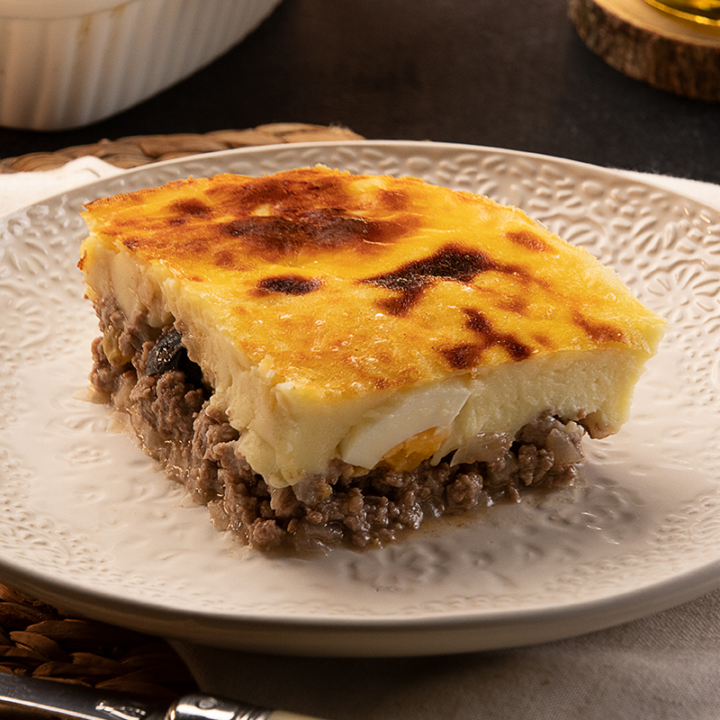

Potato Cake Recipe

Description
The potato cake is a delicious dish. Its creaminess and meat makes it really perfect.
Ingredients
- 1,5kg of potato
- 1/2 cup of milk
- 1/2 cup of cream
- 2 big spoon of butter
- 1 small spoon of salt
- 1 spoon of oil
- 500g of ground meat
- 1 garlic clove
- 1 onion
- 3 eggs
- 1/2 cup of olives
- Your favorite spices
How to prepare?
- Peel the potatoes and cut them into large pieces. Cook them in hot, salty water for 15 minutes or until soft. Remove from the water and grind and add the warm milk, cream, butter and salt; until you get a creamy puree. Reserve.
- In a frying pan, heat the oil. Add the meat and cook until browned. Add the onion together with the garlic, the contents of the Gourmet Powdered Meat Broth packet, and cook until the onion is cooked and the mixture is juicy. Add Gourmet Whole Oregano, Gourmet ground cumin and Gourmet colored chili pepper, cook for 1 minute. Add the raisins and integrate well.
- In a dish that can go in the oven, put 1/3 of the mashed potatoes. Add the meat mixture, distributing it well throughout the pan. Add the olives and laminated hard-boiled egg. Cover with the rest of the puree. Place in the oven at medium-high temperature for 15 minutes or until hot and golden.